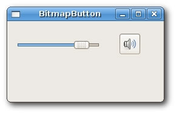
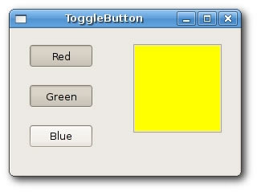
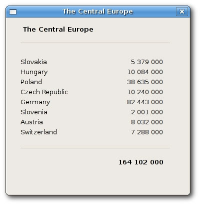
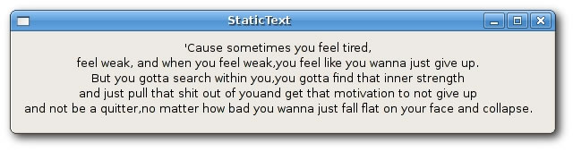
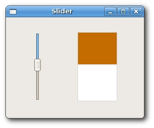

Widgets
In this chapter, we will show small examples of several widgets, available in wxWidgets. Widgets are building blocks of our applications. wxWidgets consists of a large amout of useful widgets. Widget is a basic GUI object by definition. A widget gave wxWidgets toolkit a name. This term is used on Linux systems. On Windows, a widget is usually called a control.
wxCheckBox
wxCheckBox is a widget that has two states. On and Off. It is a box with a label. The label can be set to the right or to the left of the box. If the checkbox is checked, it is represented by a tick in a box. A checkbox can be used to show/hide splashscreen at startup, toggle visibility of a toolbar etc.
checkbox.bmxSuperStrict Framework wx.wxApp Import wx.wxFrame Import wx.wxCheckBox Import wx.wxPanel Const ID_CHECKBOX:Int = 100 New MyApp.Run() Type MyApp Extends wxApp Method OnInit:Int() Local cb:CheckBox = CheckBox(New CheckBox.Create(Null, wxID_ANY, .. "CheckBox", -1, -1, 270, 150)) cb.Show(True) Return True End Method End Type Type CheckBox Extends wxFrame Field m_cb:wxCheckBox Method OnInit() Local panel:wxPanel = New wxPanel.Create(Self, wxID_ANY) m_cb = New wxCheckBox.Create(panel, ID_CHECKBOX, "Show title", 20, 20) m_cb.SetValue(True) Connect(ID_CHECKBOX, wxEVT_COMMAND_CHECKBOX_CLICKED, OnToggle) Centre() End Method Function OnToggle(event:wxEvent) Local frame:CheckBox = CheckBox(event.parent) If frame.m_cb.GetValue() Then frame.SetTitle("CheckBox") Else frame.SetTitle("") End If End Function End Type
In our example, we display one checkbox on the window. We toggle the titlel of the window by clicking on the checkbox.
m_cb = New wxCheckBox.Create(panel, ID_CHECKBOX, "Show title", 20, 20) m_cb.SetValue(True)
We create a checkbox. By default, the title is visible. So we check the checkbox by calling the method SetValue().
Connect(ID_CHECKBOX, wxEVT_COMMAND_CHECKBOX_CLICKED, OnToggle)
If we click on the checkbox, a wxEVT_COMMAND_CHECKBOX_CLICKED event is generated. We connect this event to the user defined OnToggle() function.
If frame.m_cb.GetValue() Then
frame.SetTitle("CheckBox")
Else
frame.SetTitle("")
End If
Inside the OnToggle() method, we check the state of the checkbox. If it is checked, we display "CheckBox" string in the titlebar, otherwise we show empty string.

wxBitmapButton
A bitmap button is a button, that displays a bitmap. A bitmap button can have three other states. Selected, focused and displayed. We can set a specific bitmap for those states.
bitmapbutton.bmxSuperStrict Framework wx.wxApp Import wx.wxFrame Import wx.wxSlider Import wx.wxBitmapButton Import wx.wxPanel Const ID_SLIDER:Int = 100 New MyApp.Run() Type MyApp Extends wxApp Method OnInit:Int() Local bb:BitmapButton = BitmapButton(New BitmapButton.Create(Null, .. wxID_ANY, "BitmapButton", -1, -1, 250, 130)) bb.Show(True) Return True End Method End Type Type BitmapButton Extends wxFrame Field slider:wxSlider Field button:wxBitmapButton Field pos:Int Method OnInit() wxImage.AddHandler( New wxPNGHandler ) Local panel:wxPanel = New wxPanel.Create(Self, wxID_ANY) slider = New wxSlider.Create(panel, ID_SLIDER, 0, 0, 100, 10, 30, 140, -1) button = New wxBitmapButton.Create(panel, wxID_ANY, .. wxBitmap.CreateFromFile("../media/mute.png", .. wxBITMAP_TYPE_PNG), 180, 20) Connect(ID_SLIDER, wxEVT_COMMAND_SLIDER_UPDATED, OnScroll) Centre() End Method Function OnScroll(event:wxEvent) Local frame:BitmapButton = BitmapButton(event.parent) frame.pos = frame.slider.GetValue() If frame.pos = 0 Then frame.button.SetBitmapLabel(wxBitmap.CreateFromFile(.. "../media/mute.png", wxBITMAP_TYPE_PNG)) Else If frame.pos > 0 And frame.pos <= 30 Then frame.button.SetBitmapLabel(wxBitmap.CreateFromFile(.. "../media/min.png", wxBITMAP_TYPE_PNG)) Else If frame.pos > 30 And frame.pos < 80 Then frame.button.SetBitmapLabel(wxBitmap.CreateFromFile(.. "../media/med.png", wxBITMAP_TYPE_PNG)) Else frame.button.SetBitmapLabel(wxBitmap.CreateFromFile(.. "../media/max.png", wxBITMAP_TYPE_PNG)) End If End Function End Type
In our example, we have a slider and a bitmap button. We simulate a volume control. By dragging the handle of a slider, we change a bitmap on the button.
wxImage.AddHandler( New wxPNGHandler )
We will use PNG images, so we must initialize a PNG image handler.
button = New wxBitmapButton.Create(panel, wxID_ANY, ..
wxBitmap.CreateFromFile("../media/mute.png", ..
wxBITMAP_TYPE_PNG), 180, 20))
We create a bitmap button. We specify a bitmap type, in our case wxBITMAP_TYPE_PNG
pos = slider.GetValue()
We get the slider value. Depending on this value, we set a bitmap for our button. We have four volume states. Mute, minimum, medium and maximum. To change a bitmap on the button, we call the SetBitmapLabel() method.

wxToggleButton
wxToggleButton is a button that has two states. Pressed and not pressed. You toggle between these two states by clicking on it. There are situations where this functionality fits well.
togglebutton.h#include <wx/wx.h> #include <wx/tglbtn.h> class ToggleButton : public wxFrame { public: ToggleButton(const wxString& title); void OnToggleRed(wxCommandEvent& event); void OnToggleGreen(wxCommandEvent& event); void OnToggleBlue(wxCommandEvent& event); protected: wxToggleButton *m_tgbutton1; wxToggleButton *m_tgbutton2; wxToggleButton *m_tgbutton3; wxPanel *m_panel; wxColour *colour; }; const int ID_TGBUTTON1 = 101; const int ID_TGBUTTON2 = 102; const int ID_TGBUTTON3 = 103;
togglebutton.cpp#include "togglebutton.h" ToggleButton::ToggleButton(const wxString& title) : wxFrame(NULL, wxID_ANY, title, wxDefaultPosition, wxSize(280, 180)) { wxPanel *panel = new wxPanel(this, wxID_ANY); colour = new wxColour(0, 0, 0); m_tgbutton1 = new wxToggleButton(panel, ID_TGBUTTON1, wxT("Red"), wxPoint(20, 20)); m_tgbutton2 = new wxToggleButton(panel, ID_TGBUTTON2, wxT("Green"), wxPoint(20, 70)); m_tgbutton3 = new wxToggleButton(panel, ID_TGBUTTON3, wxT("Blue"), wxPoint(20, 120)); Connect(ID_TGBUTTON1, wxEVT_COMMAND_TOGGLEBUTTON_CLICKED, wxCommandEventHandler(ToggleButton::OnToggleRed)); Connect(ID_TGBUTTON2, wxEVT_COMMAND_TOGGLEBUTTON_CLICKED, wxCommandEventHandler(ToggleButton::OnToggleGreen)); Connect(ID_TGBUTTON3, wxEVT_COMMAND_TOGGLEBUTTON_CLICKED, wxCommandEventHandler(ToggleButton::OnToggleBlue)); m_panel = new wxPanel(panel, wxID_NEW, wxPoint(150, 20), wxSize(110, 110), wxSUNKEN_BORDER); m_panel->SetBackgroundColour(colour->GetAsString()); } void ToggleButton::OnToggleRed(wxCommandEvent& WXUNUSED(event)) { unsigned char green = colour->Green(); unsigned char blue = colour->Blue(); if ( colour->Red() ) { colour->Set(0, green, blue); } else { colour->Set(255, green, blue); } m_panel->SetBackgroundColour(colour->GetAsString()); } void ToggleButton::OnToggleGreen(wxCommandEvent& WXUNUSED(event)) { unsigned char red = colour->Red(); unsigned char blue = colour->Blue(); if ( colour->Green() ) { colour->Set(red, 0, blue); } else { colour->Set(red, 255, blue); } m_panel->SetBackgroundColour(colour->GetAsString()); } void ToggleButton::OnToggleBlue(wxCommandEvent& WXUNUSED(event)) { unsigned char red = colour->Red(); unsigned char green = colour->Green(); if ( colour->Blue() ) { colour->Set(red, green, 0); } else { colour->Set(red, green, 255); } m_panel->SetBackgroundColour(colour->GetAsString()); }
main.h#include <wx/wx.h> class MyApp : public wxApp { public: virtual bool OnInit(); };
main.cpp#include "main.h" #include "togglebutton.h" IMPLEMENT_APP(MyApp) bool MyApp::OnInit() { ToggleButton *button = new ToggleButton(wxT("ToggleButton")); button->Centre(); button->Show(true); return true; }
In our example, we show three toggle buttons and a panel. We set the background color of the panel to black. The togglebuttons will toggle the red, green and blue parts of the color value. The background color will depend on which togglebuttons we have pressed.
colour = new wxColour(0, 0, 0);
This is the initial color value. No red, green and blue equals to black. Theoretically speaking, black is not a color after all.
m_tgbutton1 = new wxToggleButton(panel, ID_TGBUTTON1,
wxT("Red"), wxPoint(20, 20));
Here we create a toggle button.
Connect(ID_TGBUTTON1, wxEVT_COMMAND_TOGGLEBUTTON_CLICKED,
wxCommandEventHandler(ToggleButton::OnToggleRed));
If we click on the toggle button, a wxEVT_COMMAND_TOGGLEBUTTON_CLICKED event is generated. We connect the event handlers for this event. Notice, that we don't connect events to the button methods, but to the wxFrame. widget, which is a grand parent of the toggle buttons. It is possible to do this, because command events are propagated to their parents. In our case, button -> panel -> frame. If we wanted to connect the event to the button, we would have to create our derived button classe, which would mean more work.
if ( colour->Blue() ) {
colour->Set(red, green, 0);
} else {
colour->Set(red, green, 255);
}
In the event handlers, we set the respective wxColour parameters.
m_panel->SetBackgroundColour(colour->GetAsString());
We set the background of the panel.

wxStaticLine
This widget displays a simple line on the window. It can be horizontal or vertical.
staticline.h#include <wx/wx.h> class Staticline : public wxDialog { public: Staticline(const wxString& title); };
staticline.cpp#include "staticline.h" #include <wx/stattext.h> #include <wx/statline.h> Staticline::Staticline(const wxString& title) : wxDialog(NULL, wxID_ANY, title, wxDefaultPosition, wxSize(360, 350)) { wxFont font(10, wxDEFAULT, wxNORMAL, wxBOLD); wxStaticText *heading = new wxStaticText(this, wxID_ANY, wxT("The Central Europe"), wxPoint(30, 15)); heading->SetFont(font); wxStaticLine *sl1 = new wxStaticLine(this, wxID_ANY, wxPoint(25, 50), wxSize(300,1)); wxStaticText *st1 = new wxStaticText(this, wxID_ANY, wxT("Slovakia"), wxPoint(25, 80)); wxStaticText *st2 = new wxStaticText(this, wxID_ANY, wxT("Hungary"), wxPoint(25, 100)); wxStaticText *st3 = new wxStaticText(this, wxID_ANY, wxT("Poland"), wxPoint(25, 120)); wxStaticText *st4 = new wxStaticText(this, wxID_ANY, wxT("Czech Republic"), wxPoint(25, 140)); wxStaticText *st5 = new wxStaticText(this, wxID_ANY, wxT("Germany"), wxPoint(25, 160)); wxStaticText *st6 = new wxStaticText(this, wxID_ANY, wxT("Slovenia"), wxPoint(25, 180)); wxStaticText *st7 = new wxStaticText(this, wxID_ANY, wxT("Austria"), wxPoint(25, 200)); wxStaticText *st8 = new wxStaticText(this, wxID_ANY, wxT("Switzerland"), wxPoint(25, 220)); wxStaticText *st9 = new wxStaticText(this, wxID_ANY, wxT("5 379 000"), wxPoint(220, 80), wxSize(90, -1), wxALIGN_RIGHT); wxStaticText *st10 = new wxStaticText(this, wxID_ANY, wxT("10 084 000"), wxPoint(220, 100), wxSize(90, -1), wxALIGN_RIGHT); wxStaticText *st11 = new wxStaticText(this, wxID_ANY, wxT("38 635 000"), wxPoint(220, 120), wxSize(90, -1), wxALIGN_RIGHT); wxStaticText *st12 = new wxStaticText(this, wxID_ANY, wxT("10 240 000"), wxPoint(220, 140), wxSize(90, -1), wxALIGN_RIGHT); wxStaticText *st13 = new wxStaticText(this, wxID_ANY, wxT("82 443 000"), wxPoint(220, 160), wxSize(90, -1), wxALIGN_RIGHT); wxStaticText *st14 = new wxStaticText(this, wxID_ANY, wxT("2 001 000"), wxPoint(220, 180), wxSize(90, -1), wxALIGN_RIGHT); wxStaticText *st15 = new wxStaticText(this, wxID_ANY, wxT("8 032 000"), wxPoint(220, 200), wxSize(90, -1), wxALIGN_RIGHT); wxStaticText *st16 = new wxStaticText(this, wxID_ANY, wxT("7 288 000"), wxPoint(220, 220), wxSize(90, -1), wxALIGN_RIGHT); wxStaticLine *sl2 = new wxStaticLine(this, wxID_ANY, wxPoint(25, 260), wxSize(300, 1)); wxStaticText *sum = new wxStaticText(this, wxID_ANY, wxT("164 102 000"), wxPoint(220, 280)); wxFont sum_font = sum->GetFont(); sum_font.SetWeight(wxBOLD); sum->SetFont(sum_font); this->Centre(); }
main.h#include <wx/wx.h> class MyApp : public wxApp { public: virtual bool OnInit(); };
main.cpp#include "main.h" #include "staticline.h" IMPLEMENT_APP(MyApp) bool MyApp::OnInit() { Staticline *sl = new Staticline(wxT("The Central Europe")); sl->ShowModal(); sl->Destroy(); return true; }
In the previous example, we show Centreal European countries and their populations. The use of wxStaticLine makes it more visually attractive.
wxStaticLine *sl1 = new wxStaticLine(this, wxID_ANY, wxPoint(25, 50),
wxSize(300,1));
Here we create a horizontal static line. It is 300px wide. The height is 1px.

wxStaticText
A wxStaticText widget displays one or more lines of read-only text.
statictext.h#include <wx/wx.h> class StaticText : public wxFrame { public: StaticText(const wxString& title); };
statictext.cpp#include "statictext.h" StaticText::StaticText(const wxString& title) : wxFrame(NULL, wxID_ANY, title) { wxPanel *panel = new wxPanel(this, wxID_ANY); wxString text = wxT("'Cause sometimes you feel tired,\n\ feel weak, and when you feel weak,\ you feel like you wanna just give up.\n\ But you gotta search within you,\ you gotta find that inner strength\n\ and just pull that shit out of you\ and get that motivation to not give up\n\ and not be a quitter,\ no matter how bad you wanna just fall flat on your face and collapse."); wxStaticText *st = new wxStaticText(panel, wxID_ANY, text, wxPoint(10, 10), wxDefaultSize, wxALIGN_CENTRE); this->SetSize(600, 110); this->Centre(); }
main.h#include <wx/wx.h> class MyApp : public wxApp { public: virtual bool OnInit(); };
main.cpp#include "main.h" #include "statictext.h" IMPLEMENT_APP(MyApp) bool MyApp::OnInit() { StaticText *st = new StaticText(wxT("StaticText")); st->Show(true); return true; }
In our example, we display a part of the Eminem's Till I Collapse lyrics on the window.
wxStaticText *st = new wxStaticText(panel, wxID_ANY, text,
wxPoint(10, 10), wxDefaultSize, wxALIGN_CENTRE);
Here we create the wxStaticText widget. The static text is aligned to the cetre.

wxSlider
wxSlider is a widget that has a simple handle. This handle can be pulled back and forth. This way we are choosing a value for a specific task. Sometimes using a slider is more natural, than simply providing a number or using a spin control.
Slider.h#include <wx/wx.h> #include <wx/slider.h> class MyPanel : public wxPanel { public: MyPanel(wxFrame *parent); void OnPaint(wxPaintEvent& event); void OnScroll(wxScrollEvent& event); wxSlider *slider; int fill; }; class Slider : public wxFrame { public: Slider(const wxString& title); MyPanel *panel; }; const int ID_SLIDER = 100;
Slider.cpp#include "Slider.h" Slider::Slider(const wxString& title) : wxFrame(NULL, wxID_ANY, title, wxDefaultPosition, wxSize(270, 200)) { panel = new MyPanel(this); Center(); } MyPanel::MyPanel(wxFrame * parent) : wxPanel(parent, wxID_ANY) { fill = 0; slider = new wxSlider(this, ID_SLIDER, 0, 0, 140, wxPoint(50, 30), wxSize(-1, 140), wxSL_VERTICAL); Connect(ID_SLIDER, wxEVT_COMMAND_SLIDER_UPDATED, wxScrollEventHandler(MyPanel::OnScroll)); Connect(wxEVT_PAINT, wxPaintEventHandler(MyPanel::OnPaint)); } void MyPanel::OnScroll(wxScrollEvent& event) { fill = slider->GetValue(); Refresh(); } void MyPanel::OnPaint(wxPaintEvent& event) { wxPaintDC dc(this); wxPen pen(wxColour(212, 212, 212)); dc.SetPen(pen); dc.DrawRectangle(wxRect(140, 30, 80, 140)); wxBrush brush1(wxColour(197, 108, 0)); dc.SetBrush(brush1); dc.DrawRectangle(wxRect(140, 30, 80, fill)); }
main.h#include <wx/wx.h> class MyApp : public wxApp { public: virtual bool OnInit(); };
main.cpp#include "main.h" #include "Slider.h" IMPLEMENT_APP(MyApp) bool MyApp::OnInit() { Slider *slider = new Slider(wxT("Slider")); slider->Show(true); return true; }
In our example, we display a slider widget. By pulling the handle of the slider, we control the background color of the panel. In such an example, using slider is more natural than using e.g. a spin control.
slider = new wxSlider(this, ID_SLIDER, 0, 0, 140, wxPoint(50, 30),
wxSize(-1, 140), wxSL_VERTICAL);
We create a vertical slider. The initial value is 0, minimal value is 0 and maximal value is 140. We display no ticks and no labels.
Connect(ID_SLIDER, wxEVT_COMMAND_SLIDER_UPDATED,
wxScrollEventHandler(MyPanel::OnScroll));
Here we connect a wxEVT_COMMAND_SLIDER_UPDATED event to the OnScroll() user defined method.
Connect(wxEVT_PAINT, wxPaintEventHandler(MyPanel::OnPaint));
We will also do some drawing, so we connect OnPaint() method to the wxEVT_PAINT event.
fill = slider->GetValue(); Refresh();
In the OnScroll() method, we will get the current slider value. We call the Refresh() method, which will generate a wxEVT_PAINT event.
dc.DrawRectangle(wxRect(140, 30, 80, 140)); ... dc.DrawRectangle(wxRect(140, 30, 80, fill));
Inside the OnPaint() event handler, we draw two rectangles. The first method is draws a white rectangle with a gray border. The second method draws the a rectangle with some brownish color. The height of the rectangle is controled by the fill value, which is set by the slider widget.
